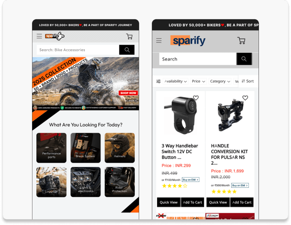

Prepared for Dustin Fleck, Co-Founder, SHEKO
386,000 visits a month. Let's make more of them count.
Nobody buys a shake plan for the shake. They buy the four weeks they hope it gets them through.


Your best proof is there. It just arrives late.
Proof sits one click deep
The homepage opens on a question, "Balance gewinnen oder Gewicht verlieren?", with two buttons of equal weight. The 11,000,000 meals sold and the 10,000 Starter-Sets in two months only appear after a click. We would test leading with them.
Three choices before the cart
The Starter-Set asks for three separate flavour picks before it can go in the cart, and on a phone the first screen shows no price and no button. A preselected best seller mix with a simple change option is a fast test.
Week four has no next step
The Starter-Set is a four week program, yet its page shows no subscribe or reorder option, although SHEKO runs subscriptions (Abo verwalten in the footer). Week four is when the customer decides, so the next step belongs on the page.
The discount waits at the bottom
The secret discount and the 60 page metabolism guide are offered in a block at the very end of the homepage, after the reviews. Testing the same offer higher up and on product pages could turn more of your visitors into a list.
Three tests. One question: what makes them buy?
Proof first homepage
Open with 11,000,000 meals sold and the 4.8 rating, one main button to the Starter-Set.
One tap Starter-Set
Preselect the three most popular flavours, put price and button in the first mobile screen.
The week four bridge
A reorder or subscribe option on the Starter-Set page, shown before the four weeks run out.
At 386,000 visits a month, every 0.1 point of conversion rate is about 386 more orders a month, from traffic you already have.Every idea runs as an A/B test first. Only the winners ship.
05/09A conversion team that designs, builds and proves every change.
 Official VWO agency partner
Official VWO agency partner


Six steps. Then again, sharper.
Data, recordings and your pages, read closely.
Clear ideas, ranked by expected impact.
Variants designed and coded by our team.
Checked on every device before it goes live.
Read the result honestly, win or lose.
Ship the winner, feed the next test.
Proof, not promises.
Results from online shops we run CRO for, each one validated by A/B testing.



Book
a call.
Thirty minutes on sheko.com. We walk you through what we saw and the first three tests we would run, on your real numbers instead of ours.
Book a call